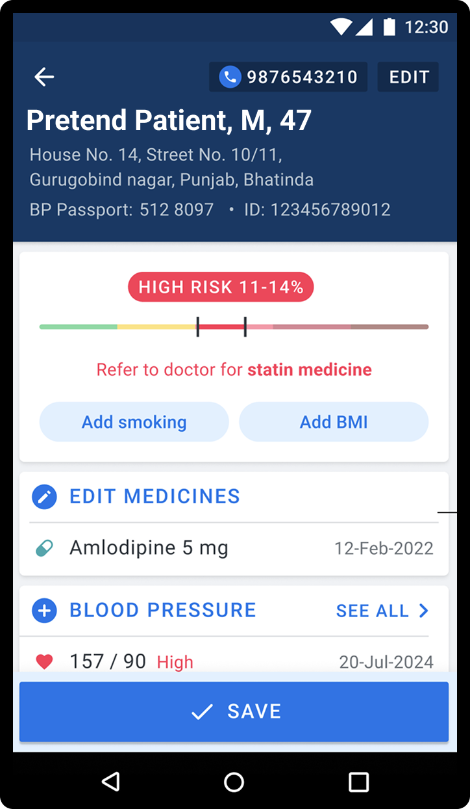

Cardiovascular disease (CVD) is one of the leading causes of premature death worldwide, and high cholesterol is among the most treatable risk factors driving it. Statins are safe, effective, and affordable medicines that reduce CVD deaths by 25% in high-risk patients. And yet, in low- and middle-income countries, fewer than 1 in 10 primary CVD prevention patients and fewer than 1 in 5 secondary CVD prevention patients are currently receiving them.
The gap isn't because statins are hard to obtain or expensive. Often, it comes down to something more fundamental: identifying which patients are actually eligible.
The challenge of risk assessment in busy clinics
The World Health Organization has developed robust tools for estimating a patient's 10-year cardiovascular risk (both laboratory-based and non-laboratory-based versions) using information that primary care workers already collect: age, gender, blood pressure, diabetes status, smoking history, and BMI or total cholesterol. WHO has calibrated these tools for different regions, with versions covering Africa, the Americas, South-East Asia, Europe, the Eastern Mediterranean, and the Western Pacific.
The problem has been practical. Traditionally, CVD risk assessment relied on paper-based charts that take time to consult during a busy clinic. In a setting where a health worker may be seeing dozens of patients in a day, pulling out a chart, locating the right risk category, and then determining statin eligibility adds friction at precisely the moment when it needs to be frictionless.

Our new cardiovascular disease risk calculator
Simple now automates the entire CVD risk calculation for both the WHO lab-based and non-laboratory tools, and surfaces the result directly during patient data entry. The right regional risk chart is automatically applied based on the patient's country, so there's nothing to configure.
When a clinician records a patient visit, Simple prompts for the data points needed to generate a risk score: height and weight (for BMI), smoking status, and cholesterol when available. The app calculates a risk estimate automatically and flags patients who meet the criteria for statin therapy. If some data points are missing, Simple still generates a risk range from the information that is available and flags the patient if appropriate.
The result is a faster, more consistent process that reduces the chance that an eligible patient is missed simply because the risk calculation was skipped.
Who gets flagged?
Eligibility criteria are tailored to each country's hypertension management protocols, but the general thresholds are:
Using the non-laboratory risk score:
- Any history of CVD
- Diabetes and age ≥ 40 years
- 10-year CVD risk ≥ 10% per regional WHO risk chart (or an alternate threshold based on country guidelines)
Using the laboratory-based risk score:
- Any history of CVD
- Total cholesterol ≥ 8 mmol/L
- Diabetes and age ≥ 40 years
- 10-year CVD risk ≥ 10% per regional WHO risk chart
The specific statin prescribed, dosage, and any adjusted risk thresholds are always determined by the national or local treatment protocol.
Why this matters
Getting more high-risk patients onto statins is one of the highest-impact interventions available in primary care. The barrier has rarely been clinical knowledge, since clinicians know statins work, but rather the time and cognitive load required to apply that knowledge consistently across every patient, every visit.
By embedding the risk calculation into the normal flow of patient data entry, Simple removes that barrier. Health workers don't need to consult a separate chart or remember the eligibility criteria. The app does the work, so they can focus on the patient in front of them.